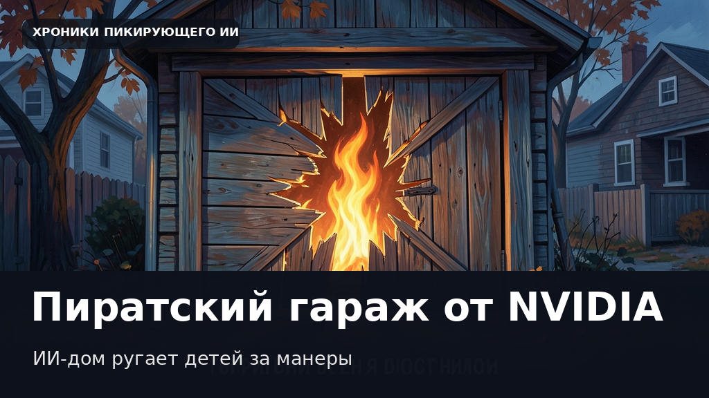

Дом с характером: NVIDIA научила гаражную дверь жаловаться на жизнь и слушать «пожалуйста»
Этот текст и иллюстрация созданы автоматически. В статье могут быть неточности; это не опубликованная редакционная новость.

Октябрьские вечера созданы для историй о призраках, но в компании NVIDIA решили подойти к хэллоуинской классике с инженерным юмором. Сотрудник компании собрал интерактивную инсталляцию MonsterHouse, превратив обычный гаражный ворота в сварливого строительного ветерана с замашками старого пирата. Конструкция не просто пугает прохожих, а полноценно поддерживает диалог: она слушает детей, ворчит на непрошеных гостей и заметно добреет, если кто-то не забывает про вежливость. Проект полностью автономен и работает на одной рабочей станции.
За техническую начинку отвечает целое созвездие моделей. Речь распознает NVIDIA Nemotron 3 ASR, превращая детские реплики в текст. В роли мыслительного центра выступает Nemotron 3.5 Bolt E4B — компактная открытая языковая модель с 4-битлинейным квантованием, настроенная с помощью LoRA-адаптера для придания персонажу нужной степени вредности. Озвучивание реплик берет на себя Magpie TTS Zeroshot, подстраиваясь под короткий образец голоса, а за мимику отвечает Audio2Face-3D, оживляющая деревянную пасть в реальном времени через Unreal Engine 5.
По задумка автора, характер персонажа строится на контрасте. Сначала угрюмый фасад отмахивается от посетителей фразами в духе «я занят ворчанием, идите к соседям», но вежливое слово способно растопить даже цифровое сердце. Добившись заветного «пожалуйста», дом сменяет гнев на милость и выдает заслуженные сладости. Подобные эксперименты показывают, как локальные голосовые агенты выходят за рамки скучных корпоративных чатов, превращаясь в живых и упрямых персонажей прямо у нас во дворе.
Дата объявления в RSS: 2026-10-30. Дата черновика: 2026-11-01.